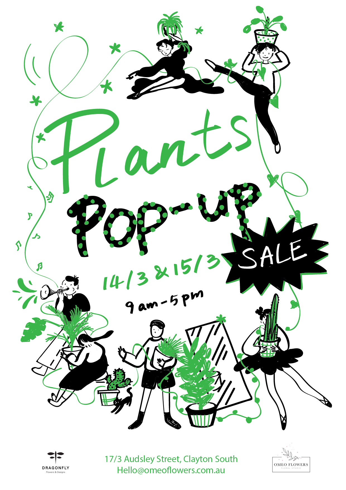
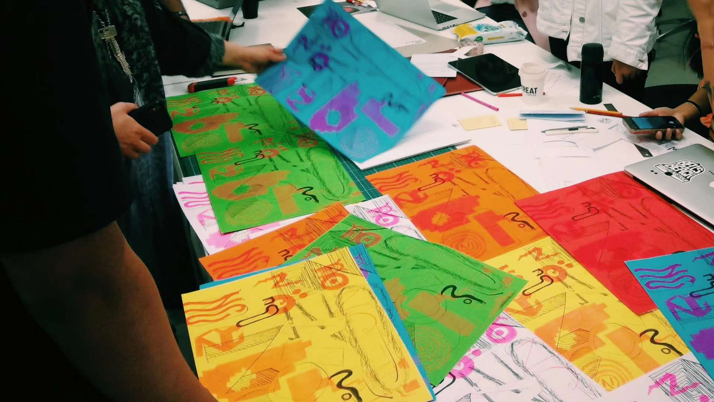

Apr. 2020
Do you feel free to do freelancing?
#Freelancing #lifestyle #free #quarantine
I know there are lots of articles to talk about all the tips and advice for being a freelancing designer,
but here I just want to share my experience with you so that you can have a general idea about the life like this.
This might not be very practical for your situation, but it is still a good story to read.
Last Christmas, I was in the big struggle of going back to China
for my career and families soon or later. I wrote an email to my tutor
Vincent and he suggested me to stay for a longer time and see how it goes.
So I decided to stay for another couple of months and see if I can do freelancing.
It was not that easy to find any design-related jobs around that time, so I decided
to travel around, just in case if I need to go back soon (at the same time, I can
also do more art on the way). Between my trips, I still applied for some opportunities,
and luckily, I got one chance.
Help to make the flowers bloom
It was a florist shop and they need a designer who can speak both English and
Mandarin, and interested in marketing as well. The boss, Stella, is a Korean so
she posted that opportunity in the Korean community, and my Korean friend, Eunjin,
who always be my supporter and "mom" (we are the mom for each other because we
care a lot in details) saw it and encouraged me to apply. The initial need of
this role was to design the website, which I did a lot before, and it also
follows with other design-related tasks - the business just started and there
are lots of things to be done.

It was a nice freelancing experience - every week I can work for 15-20 hours and
that is similar to a part-time job or even a full-time job (if I can work hard
enough). As you know, freelancing means you can do works anytime and anywhere,
that flexibility is the main pro for this role. So every two weeks, we have a
little meeting and I work at home anytime I want, as long as I control my hours
in no more than 20 hours a week, it would be fine.
Maybe you have noticed, working from home sometimes is not that efficient. It is so
easy to get distracted. To keep myself more productive, also because most of my
projects are paid by hours, so I use an online time tracker to track my working
hours, and that also gives me the idea of my time arrangement. Another thing that
might help with efficiency is jumping among tasks. I always do another project
when I got stuck, or get the inspirations when doing housework or getting a
shower. It is freelancing the role itself gives me the possibilities to play
around all these.
The possibility of choosing projects and clients is a big advantage and also a
challenge as a freelancer. Some clients are super easy to communicate, and
if they can pay you well and on time, they are perfect angel clients, which
is quite rare, to be honest. As a starter, soemtimes you cannot even choose,
it needs some luck. The lucky thing is that the boss of the florist shop, Stella, is
super open and encouraging for me to do all the experimental design, and that
makes me want to do more and feel more connected to her business.
From my experience, one way of getting this kind of clients, also get to work
with fun projects, is to show more you before doing jobs, so they have quite
clear expectations which match their needs - they pick you to do the jobs just
because of who you are and what you like to do. What can be better than that?
It is hard in the beginning, but once you found one, you can find a way to keep
that relationship so you can continue doing works for these wonderful people and
attract similar people or projects based on this. However, most of the time, you
can just choose one or two good things, like interesting projects, or easy-going
people, or you just need that money.
For some people, those changing experience means uncertain or risky, but for me,
choosing clients and projects is a way to open the doors to many different people,
different types of work or even different industries, so that I can explore and
play more.
More opportunities are on the way
Besides the florist shop, I also got the chance to do some freelancing jobs with other companies.
One was with the outdoor education company, OutBeyond, the one that I knew from my past
voluntary experience. They came back to me to do design after one year of my voluntary works,
and I have been worked with them for more than 5 projects till now.
Because of my interest in making zines, I also got the chance from my tutor Noel back
in my university for making a zine about Risograph printing and helping organizing
workshops (will talk about that more in the next story).

In March, I even got a chance to do artwork for Signal, the place I always go for art education,
which belongs to the City of Melbourne.
More and more things are coming, and I feel super excited about all these - most of the works
are based on my interests and love, and the budget is getting higher and higher.
But the virus thing happened
I did a calculate in March, seeing the works for the florist shop as my main income,
I can successfully support myself with all the works I did from March (every month
I spend around $1500 in total, so it is quite easy to feed myself) - it is quite
an encouraging thing, finally, I can be financially independent. However, the virus
thing happened.
Unsurprisingly, all the projects stopped. Because of the lockdown, the florist shop was closed,
Signal was closed, the university was closed and the outdoor education company cannot go outdoor.
Everything is waiting for further notifications. I do not know if I should finish the ones that
I'm doing now, and I do not know whether I can still expect to keep my projects or not. When
will everything be back to normal, I believe everyone is asking this question.
At this difficult time, the disadvantages of freelancing showed up. The biggest thing is about money.
Because no projects are going on, everything paused, including the payment. Most of the clients
are people I know for a while, so I seldom have contracts, and usually, I do not have to chase
them for money. However, this time, it is hard for me to get paid on time. Besides the payment,
there is also a huge effect on the coming projects. I can always work online, however, my
clients cannot. So that means no projects or income for the following weeks or months, needs
to wait until the further notifications. The government cannot help me with that either - my
dream of being financially independent broke.
However, there is still a good thing for being a freelancer in this difficult time. At least
I am so used to the quarantine - that is my everyday life. I just went back to the state that
I used to be, and I hope new opportunities can come soon
(plllllllleeeeeeeeaaaaase).
<-Before
Menu